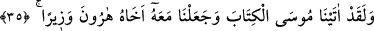
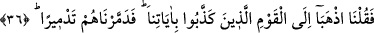
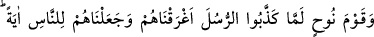
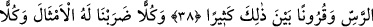
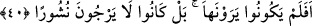

İNSANLAR İÇİN BİR İBRET
35. Andolsun biz Mûsâ’ya Kitab’ı verdik, kardeşi Harun’u da ona yardımcı
yaptık.
36. “Âyetlerimizi yalan sayan kavme gidin” dedik. Sonunda, (yola
gelmediklerinden) onları yerle bir ediverdik.
37. Nuh kavmine gelince, peygamberleri yalancılıkla itham ettiklerinde onları,
suda boğduk ve kendilerini insanlar için bir ibret yaptık. Zâlimler için acıklı bir azâb
hazırladık.
38. Ad’ı, Semûd’u, Ress halkını ve bunlar arasında daha birçok nesilleri de
(inkârcılıklarından ötürü helâk ettik).
39. Onların her birine (uymaları için) misaller getirdik; (ama öğüt almadıkları
için) hepsini kırdık geçirdik.
40. (Rasûlüm!) Andolsun (bu Mekkeli putperestler), belâ ve felâket yağmuruna
tutulmuş olan o beldeye uğramışlardır. Peki onu görmüyorlar mıydı? Hayır, onlar
öldükten sonra dirilmeyi ummamaktadırlar.
“Andolsun” Allah’a yemin olsun ki “biz Mûsâ’ya Kitab’ı” Tevrât’ı “verdik,” Yâni
Fir’avn ve kavmini denizde boğduktan sonra Mûsâ’ya Tevrât’ı indirdik demektir.
el-İrşâd’da der ki: “Mûsâ (a.s.)’a kitap verilmesi Fir’avn’ın helâk olmasından sonra
olduğu halde ve diğer dokuz mûcize gibi onların helâkiyle doğrudan ilgisi
bulunmamasına rağmen kıssanın başlangıcında kitabın verilmesiyle söze başlanması
daha baştan Mûsâ (a.s.)’ın kemâlin doruk noktasına ulaştığını ve nihâî gayesi olan
İsrâiloğulları’nı Fir’avn’un esâretinden kurtardığını ve onları Tevrat’ta bulunan
hükümlerle Hakk’ın yoluna irşâd ettiğini bildirmek içindir.
“Kardeşi Harun’u da ona” ilâhî dâvette ve Allah kelimesini üstün kılma husûsunda
“yardımcı yaptık.” Hârun, Araplar tarafından kullanılmayan yabancı menşeli bir